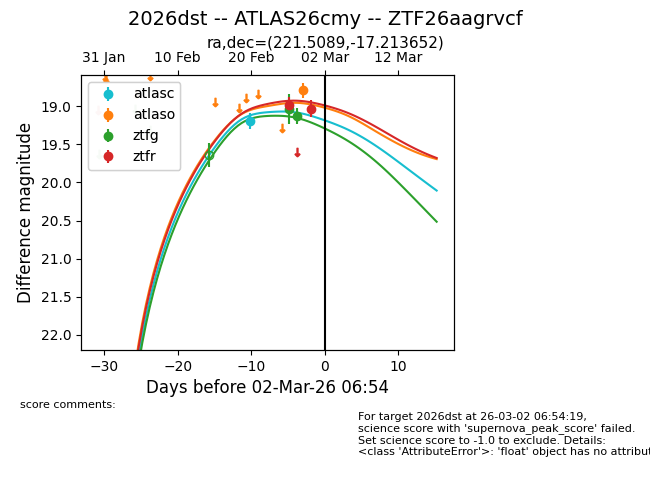
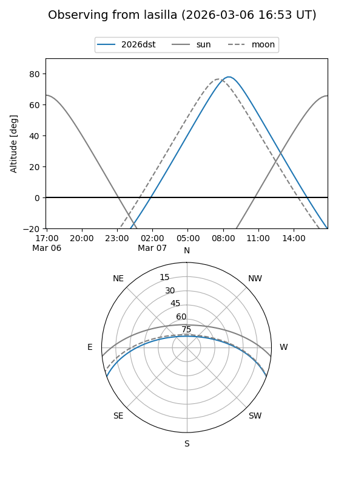
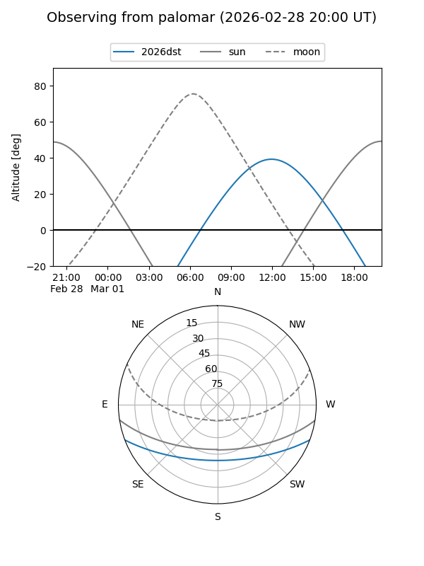
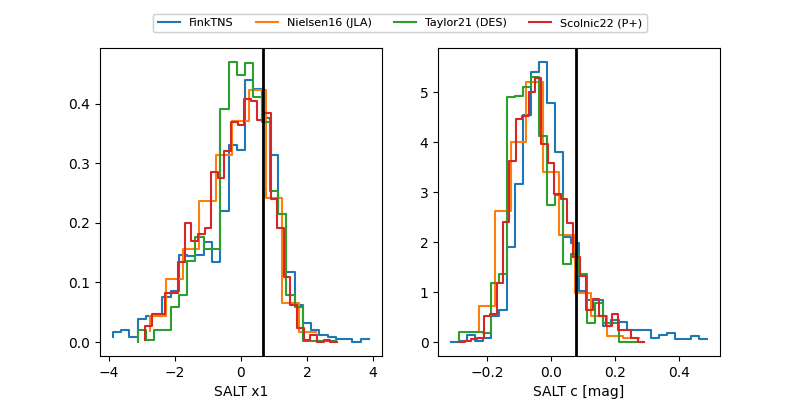

2026dst
Target 2026dst at 2026-03-02 06:56
Aliases and brokers:
FINK: link
Lasair: link
ALeRCE: link
TNS: link
YSE: link
alt names
ZTF26aagrvcf (ztf,fink_ztf)
2026dst (tns,yse)
ATLAS26cmy (atlas)
Coordinates:
equatorial (ra, dec) = 221.5089,-17.21365
equatorial (HMS+DMS) = 14:46:02.14,-17:12:49.15
galactic (l, b) = (338.2824,+37.66915)
Flags:
Photometry:
last atlasc=19.20, atlaso=18.79, ztfg=19.13, ztfr=19.03
1 atlasc, 1 atlaso, 2 ztfg, 2 ztfr detections
Lightcurve

Visibility


Additional plots
